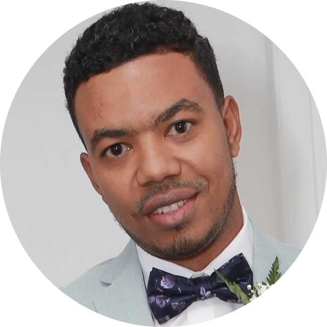

|  |
Olivier CoquillonElectrical & Automation Engineer (CPI) |
Born and raised in Haiti, Olivier has a bachelor degree in Electrical Engineering from National Taipei University of Technology. He is the eldest of a family of five brothers without sisters. In 2008 after graduating from high school, he got HELPR scholarship and started his undergraduate study in Telecommunications in Universite Quisqueya. After the 2010 earthquake he obtained another scholarship to go to Taiwan where he studied Chinese language and his electrical engineering bachelor degree
Olivier is seen by many people as being independent and self-obtained. He values the development of his intellectual awareness and the opportunity to learn, improve and grow. His ideas are generally abstract, containing intellectual insight, but he finds the practicalities of carrying out and developing these ideas to a conclusion less interesting. He likes to make sure that he knows what is going on and tries to make sure that everyone is pulling their weight. Under moderate tension, he is still able to reflect and become more efficient and effective. His knack for identifying and attending to key issues positions him well in dealing with an emergency.
He seeks to achieve perfection in most everything he does. He likes to make rules based on his own standards and to apply those rules to everyday life. He can always see room for improvement and may spend his relaxation time trying, as he sees it, to make himself, and others, better. He is seen by others as intellectually independent. He is persevering, with a singleness of purpose that he devotes to long term achievement of the mind. He is an ideal academic who continually seeks knowledge for its own sake.
He is keen to pick out logical inconsistencies. He is good at organising and bringing ideas into the plan. Both for himself and others , fun, relaxation and free time are scheduled and prioritised events. He assumes that everyone else should share his desire for advancement and may be disappointed when others appear to lack his strength of character. Because he is realist, he capitalises well on available resources, making him practical, with a good sense of timing.
He has a tendency to evaluate himself in order to minimize making critical mistakes. An original thinker, Olivier is highly observant and approaches his role with single-minded focus. He is conceptual, tenacious and realistic. Olivier's nature is to observe quietly and he appears to be collecting data on everything. However, when an emergency occurs, he can move swiftly to the root of the problem to deal with it expeditiously. He tries to use logical principles to make sense of the ideas that constantly arise in his mind. He focuses on truth, occuracy and productivity, but this can be seen by others as a rather one-sided commitment to his work.
Olivier is independent by nature, but he is prepared to labour tirelessly for a team mission he commits to. Once committed to an idea or project, Olivier has enormous resolve to carry it through and would like others to share his determination. Olivier believes in doing everything the right way and his preoccupation with perfection makes him sensitive to errors or unfairness. Logical, critical and ingenious, Olivier can see the consequences of the application of new ideas and has the perseverance to see pilot projects translated into reality. Developing , fostering, improving and honing his skills is likely to be life's work for him.
|
| Job title | Period |
|---|---|
| Remote Maximo Support Analyst - Heineken | Oct 2021 - Present |
| Automation Team Lead - Heineken | Feb. 2020-Aug 2021 |
| Senior Automation Engineer - Heineken | Oct 2018-Jan 2020 |
| Maintenance Engineer - Heineken | Aug 2015 - Sept 2018 |
| Maximo CMMS | ⭐⭐⭐ |
| Python | ⭐ |
| HACCP | ⭐⭐ |
| Microsoft Office (WS,XL,PPT...) | ⭐⭐⭐⭐ |